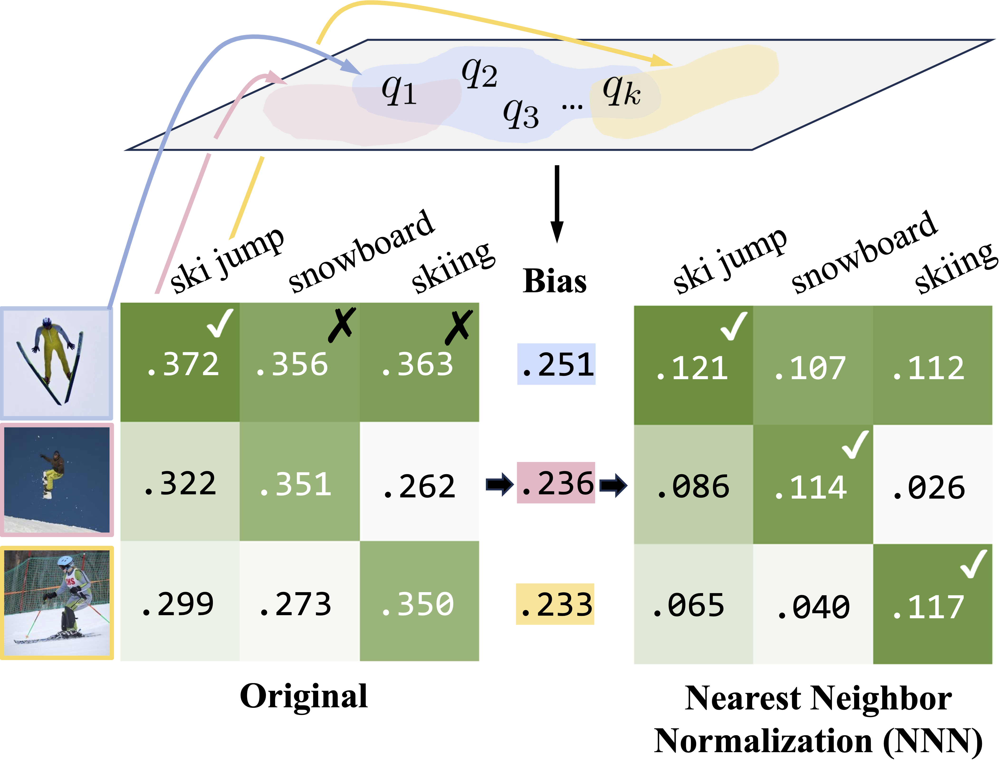
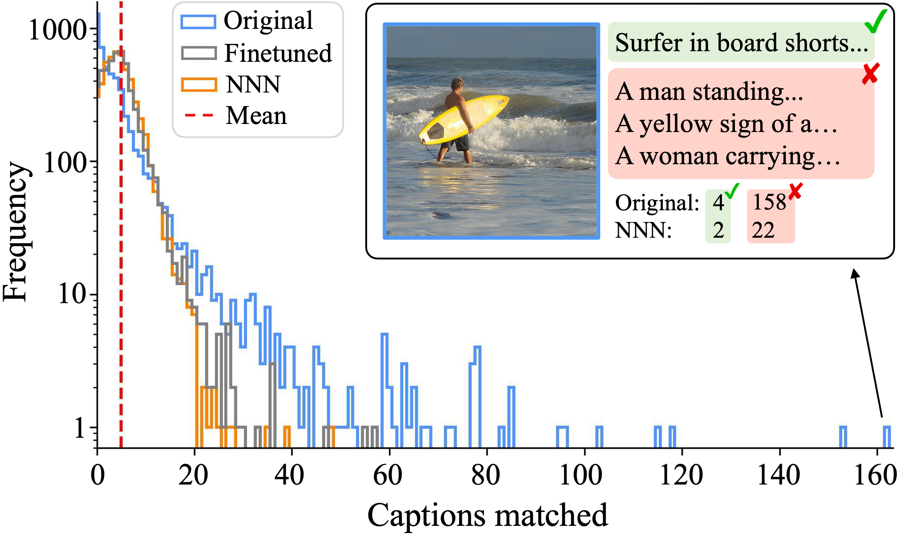
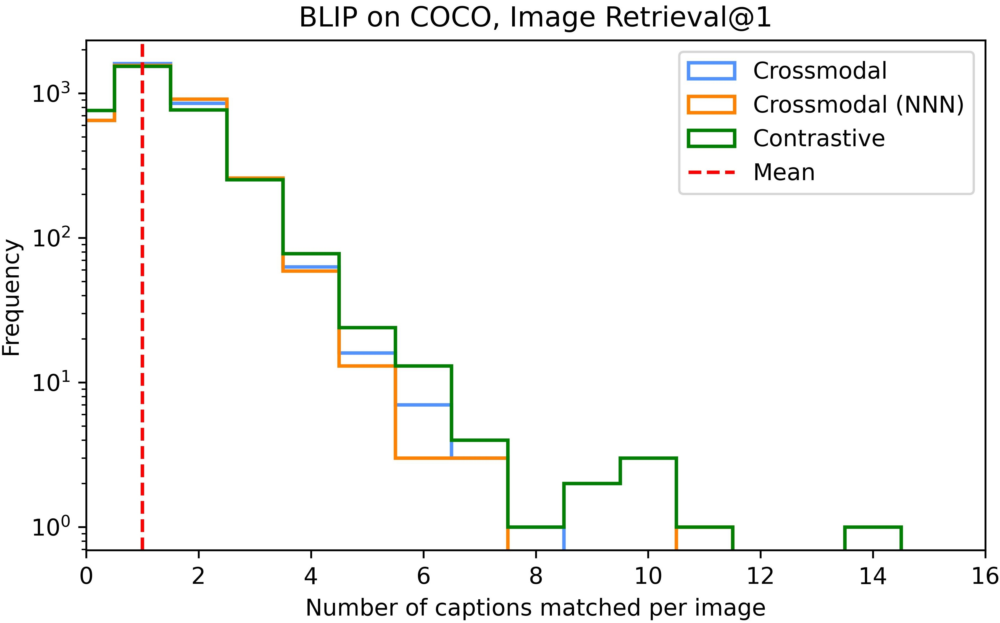
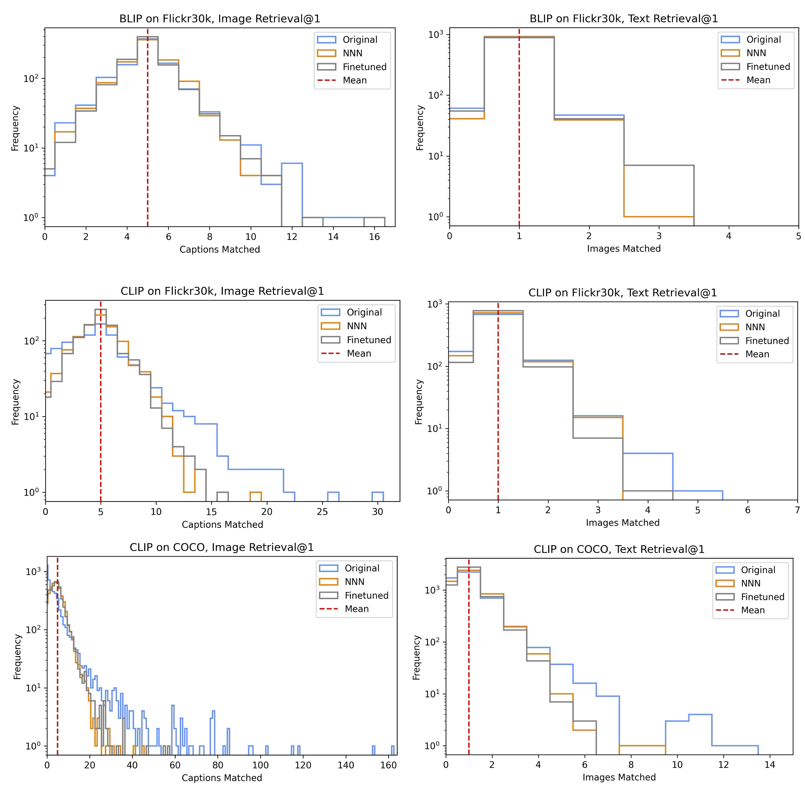

Nearest Neighbor Normalization Improves Multimodal Retrieval
Abstract
Multimodal models leverage large-scale pretraining to achieve strong but still imperfect performance on tasks such as image captioning, visual question answering, and cross-modal retrieval. In this paper, we present a simple and efficient method for correcting errors in trained contrastive image-text retrieval models with no additional training, called Nearest Neighbor Normalization (NNN). We show an improvement on retrieval metrics in both text retrieval and image retrieval for all of the contrastive models that we tested (CLIP, BLIP, ALBEF, SigLIP, BEiT) and for both of the datasets that we used (MS-COCO and Flickr30k). NNN requires a reference database, but does not require any training on this database, and can even increase the retrieval accuracy of a model after finetuning.111Our code is publicly available at https://github.com/multimodal-interpretability/nnn
Nearest Neighbor Normalization Improves Multimodal Retrieval
Neil Chowdhury1*, Franklin Wang1*, Sumedh Shenoy1*, Douwe Kiela2, Sarah Schwettmann1†, Tristan Thrush2† 1Massachusetts Institute of Technology, 2Stanford University {nchow,fxwang,sshenoy,schwett}@mit.edu, {dkiela,tthrush}@stanford.edu *Equal contribution †Equal advising
1 Introduction
Contrastive image and text models are a fundamental building block of large-scale text-to-image or image-to-text retrieval systems (Radford et al., 2021; Jia et al., 2021; Zhang et al., 2022). These models utilize contrastive loss functions to learn joint text and image embeddings, aligning embeddings for matching text and image pairs while separating embeddings for non-matching pairs. However, contrastive embeddings optimize pretraining objectives such as InfoNCE Radford et al. (2021) rather than downstream retrieval accuracy, so learned embeddings can be suboptimal for retrieval Zhou et al. (2023). Many methods for improving contrastive models on downstream retrieval tasks require additional training to adapt models across domains or aggregate information from an external database Zhou et al. (2022); Singha et al. (2023); Iscen et al. (2023), and others are specialized for individual error categories, such as gender bias Wang et al. (2021, 2022a); Berg et al. (2022).

Recent training-free methods suggest that accuracy can be improved without fine-tuning, which is useful for limited-compute environments and critical for black-box embedding models. Such methods typically use a reference database of query and retrieval embeddings to adapt the pretrained model to the downstream retrieval task. For instance, QBNorm and DBNorm normalize scores for each retrieval candidate by computing a softmax over the entire reference database Bogolin et al. (2022); Wang et al. (2023). These approaches mitigate the hubness problem, where certain retrieval candidates (“hubs”) emerge as nearest neighbors for many queries in high-dimensional embedding spaces, leading to incorrect matches (Radovanovic et al., 2010). These methods tend to be computationally impractical, requiring match score calculations for every item in the database and thus scaling linearly with the size of the reference database. Distribution normalization (DN) reduces complexity to constant time by using a first-order approximation of softmax normalization Zhou et al. (2023): text and image embeddings are normalized by subtracting the mean reference embedding. While DN is much faster than QBNorm and DBNorm, this practicality comes at the cost of reduced retrieval accuracy. Can sublinear runtime be achieved without sacrificing accuracy?
In this paper, we introduce Nearest Neighbor Normalization (NNN), a novel training-free method for contrastive retrieval (Figure 1). Like DN, it adds minimal inference overhead with sublinear time complexity relative to the reference database size—but it also outperforms both QBNorm and DBNorm on retrieval. The key idea is that NNN corrects for the effects of embeddings that are assigned disproportionately high or low retrieval scores, by normalizing per-candidate scores using only the closest query embeddings from a reference dataset. For example, NNN reduces scores for the image of the surfer in Figure 2 (a hub that incorrectly matches a large number of query captions), improving overall accuracy. Section 2 provides more details on our approach, and Section 3 empirically validates the effect of NNN for a range of models and datasets.
Overall, we contribute a new and conceptually simple approach for improving contrastive retrieval with little compute overhead. In addition to improving retrieval scores consistently for every model and dataset that we tested, NNN can reduce harmful biases such as gender bias.
2 Nearest Neighbor Normalization
Retrieval models compute a match score between a query and database retrieval candidate , and return the highest-scoring candidates. In the case of contrastive multimodal models such as CLIP, this score is typically the cosine similarity between image and text embeddings (Radford et al., 2021). Figure 2 shows how the hubness problem Radovanovic et al. (2010) manifests as a failure mode of contrastive text-to-image retrieval. Some images are simply preferred by contrastive models over other images: they have high cosine similarity with a wide array of query captions.
To correct for bias towards hubs in image-text retrieval, we propose NNN, an approach that estimates bias for each retrieval candidate using a database of reference queries, . The bias is then applied as an additive correction to the original match score, then used for retrieval. Specifically, given a contrastive retrieval score , we define the bias for a retrieval candidate as a constant multiple () of the mean of , where are the queries from the reference query dataset that have the highest similarity score with . Namely, if we define the operator to denote the arguments for the which a function attains its maximum values, then we have , and our bias is computed as:
| (1) |
NNN uses the nearest query embeddings to differentiate similar objects, capturing fine-grained distinctions between retrieval candidates.
Each retrieval candidate has a constant bias score, so these scores can be computed offline and cached. The debiased retrieval score can then be computed by subtracting the estimated bias from the original score:
| (2) |
When using vector retrieval to compute match scores, bias scores are computed in sublinear time and add a constant factor to retrieval runtime; see Section 3.1 for further discussion.

3 Experiments
| Flickr30k retrieval | COCO retrieval | |||||||
|---|---|---|---|---|---|---|---|---|
| Original | DBNorm | NNN Flickr | NNN COCO | Original | DBNorm | NNN Flickr | NNN COCO | |
| CLIP | 58.82 | 65.26 (+6.4) | 64.60 (+5.8) | 63.70 (+4.9) | 30.43 | 37.82 (+7.4) | 33.45 (+3.0) | 37.53 (+7.1) |
| CLIP ft. Flickr | 72.80 | 73.80 (+1.0) | 74.14 (+1.3) | 73.32 (+0.5) | 35.56 | 40.19 (+4.6) | 36.25 (+0.7) | 40.12 (+4.6) |
| CLIP ft. COCO | 67.40 | 68.36 (+1.0) | 68.86 (+1.5) | 68.04 (+0.6) | 45.89 | 47.57 (+1.7) | 46.14 (+0.2) | 47.39 (+1.5) |
| BLIP ft. Flickr | 83.58 | 83.12 (-0.5) | 84.32 (+0.7) | 84.06 (+0.5) | 56.44 | 59.72 (+3.3) | 57.22 (+0.8) | 59.70 (+3.3) |
| BLIP ft. COCO | 82.12 | 81.92 (-0.2) | 82.80 (+0.7) | 82.64 (+0.5) | 62.68 | 64.00 (+1.3) | 62.82 (+0.1) | 64.44 (+1.8) |
| ALBEF ft. Flickr | 79.50 | 79.86 (+0.4) | 80.26 (+0.8) | 79.90 (+0.4) | 52.53 | 56.62 (+4.1) | 53.18 (+0.6) | 56.67 (+4.1) |
| ALBEF ft. COCO | 74.54 | 76.10 (+1.6) | 76.60 (+2.1) | 75.80 (+1.3) | 59.73 | 62.72 (+3.0) | 60.10 (+0.4) | 62.66 (+2.9) |
| SigLIP | 74.62 | 76.02 (+1.4) | 76.54 (+1.9) | 76.08 (+1.5) | 47.15 | 49.93 (+2.8) | 48.49 (+1.3) | 50.24 (+3.1) |
| BEiT-3 | 75.52 | 76.08 (+0.6) | 76.66 (+1.1) | 76.30 (+0.8) | 47.62 | 50.08 (+2.5) | 47.93 (+0.3) | 50.64 (+3.0) |
| BEiT-3 ft. Flickr | 86.12 | 84.68 (-1.4) | 86.00 (-0.1) | 86.30 (+0.2) | 53.57 | 55.16 (+1.6) | 53.79 (+0.2) | 55.91 (+2.3) |
| BEiT-3 ft. COCO | 82.90 | 82.20 (-0.7) | 83.48 (+0.6) | 82.78 (-0.1) | 61.88 | 61.78 (-0.1) | 61.60 (-0.3) | 62.34 (+0.5) |
| BEiT-3 Large | 77.80 | 77.70 (-0.1) | 78.54 (+0.7) | 78.20 (+0.4) | 49.34 | 51.67 (+2.3) | 50.24 (+0.9) | 52.25 (+2.9) |
| BEiT-3 Large ft. Flickr | 88.04 | 86.74 (-1.3) | 87.82 (-0.2) | 87.70 (-0.3) | 56.41 | 58.09 (+1.7) | 56.68 (+0.3) | 58.88 (+2.5) |
| BEiT-3 Large ft. COCO | 86.24 | 85.12 (-1.1) | 86.64 (+0.4) | 86.18 (-0.1) | 63.83 | 63.57 (-0.3) | 63.75 (-0.1) | 64.20 (+0.4) |
| Flickr30k retrieval | COCO retrieval | |||||||
|---|---|---|---|---|---|---|---|---|
| Original | DBNorm | NNN Flickr | NNN COCO | Original | DBNorm | NNN Flickr | NNN COCO | |
| CLIP | 79.30 | 81.20 (+1.9) | 81.20 (+1.9) | 80.10 (+0.8) | 50.02 | 53.20 (+3.2) | 51.60 (+1.6) | 53.66 (+3.6) |
| CLIP ft. Flickr | 85.70 | 86.50 (+0.8) | 87.30 (+1.6) | 86.60 (+0.9) | 53.74 | 55.42 (+1.7) | 53.92 (+0.2) | 56.44 (+2.7) |
| CLIP ft. COCO | 82.10 | 81.90 (-0.2) | 82.80 (+0.7) | 82.70 (+0.6) | 63.74 | 64.72 (+1.0) | 63.88 (+0.1) | 65.26 (+1.5) |
| BLIP ft. Flickr | 93.40 | 95.70 (+2.3) | 95.20 (+1.8) | 94.30 (+0.9) | 72.26 | 78.28 (+6.0) | 75.90 (+3.6) | 78.30 (+6.0) |
| BLIP ft. COCO | 93.70 | 94.70 (+1.0) | 95.30 (+1.6) | 94.60 (+0.9) | 79.62 | 82.52 (+2.9) | 79.58 (-0.0) | 82.46 (+2.8) |
| ALBEF ft. Flickr | 92.40 | 93.10 (+0.7) | 92.60 (+0.2) | 92.70 (+0.3) | 69.82 | 74.62 (+4.8) | 71.06 (+1.2) | 74.44 (+4.6) |
| ALBEF ft. COCO | 87.30 | 90.50 (+3.2) | 90.00 (+2.7) | 89.30 (+2.0) | 78.60 | 80.54 (+1.9) | 79.10 (+0.5) | 80.68 (+2.1) |
| SigLIP | 89.00 | 91.60 (+2.6) | 91.30 (+2.3) | 91.30 (+2.3) | 65.32 | 69.14 (+3.8) | 66.80 (+1.5) | 69.86 (+4.5) |
| BEiT-3 | 89.10 | 90.70 (+1.6) | 91.80 (+2.7) | 90.90 (+1.8) | 61.12 | 68.94 (+7.8) | 65.66 (+4.5) | 69.12 (+8.0) |
| BEiT-3 ft. Flickr | 96.30 | 94.40 (-1.9) | 95.60 (-0.7) | 95.90 (-0.4) | 72.02 | 75.12 (+3.1) | 72.62 (+0.6) | 75.22 (+3.2) |
| BEiT-3 ft. COCO | 93.60 | 94.50 (+0.9) | 95.30 (+1.7) | 94.80 (+1.2) | 80.72 | 79.90 (-0.8) | 80.42 (-0.3) | 81.26 (+0.5) |
| BEiT-3 Large | 91.10 | 93.20 (+2.1) | 93.20 (+2.1) | 92.20 (+1.1) | 63.26 | 71.06 (+7.8) | 67.60 (+4.3) | 71.08 (+7.8) |
| BEiT-3 Large ft. Flickr | 97.20 | 96.80 (-0.4) | 97.20 (0.0) | 97.50 (+0.3) | 74.32 | 77.56 (+3.2) | 74.86 (+0.5) | 77.92 (+3.6) |
| BEiT-3 Large ft. COCO | 95.50 | 95.00 (0.0) | 95.30 (-0.2) | 96.20 (+0.7) | 82.10 | 80.88 (-1.2) | 81.98 (-0.1) | 82.72 (+0.6) |
We evaluate NNN on both text-to-image and image-to-text retrieval using a variety of contrastive multimodal models (CLIP, BLIP, ALBEF, SigLIP, BEiT) (Radford et al., 2021; Li et al., 2021; Zeng et al., 2021; Li et al., 2022; Wang et al., 2022b; Zhai et al., 2023) on well-established retrieval datasets Flickr30k and COCO (Young et al., 2014; Lin et al., 2015). We also report the accuracy of DBNorm, the top-performing baseline, using DBNorm’s DualIS scoring function Wang et al. (2023). Additional DN Zhou et al. (2023), QBNorm Bogolin et al. (2022), and DualDIS (a similar performing variant of DualIS) baselines are discussed in Appendix D.
3.1 Retrieval performance
Accuracy.
To evaluate the impact of NNN on retrieval performance, we hold out a random subset of the training set with the same size as the test set, and optimize and via a hyperparameter search (Appendix B1). We use the same approach to optimize the DBNorm hyperparameters (but we note that optimizing these parameters takes 100x the compute). Then, we evaluate both methods on the test set: for image retrieval, we use training captions as the reference database, and for text retrieval, we use training images. Full results are shown for image retrieval (Table 1) and text retrieval (Table 2) for Recall@1 (using 20% of training data as the reference database, following Wang et al. (2023)). Appendix D includes results and confidence intervals for Recall@5 and Recall@10.

We performed experiments with both in-distribution queries (e.g. normalizing COCO retrieval using COCO reference queries) and out-of-distribution queries (e.g. normalizing Flickr using COCO). NNN still shows consistent gains over the original model when scores are normalized with out-of-distribution queries. We also ran ablation studies on the size of the reference query database using various subsets of Flickr and COCO and find minimal performance decrease (see Appendix E).
Efficiency.
Since NNN only requires the -nearest reference queries per retrieval candidate, unlike QBNorm and DBNorm, it does not require an exhaustive search over the matrix of similarity scores. We can use an inverted file index from Faiss Douze et al. (2024) to efficiently compute the per-retrieval candidate bias scores. Then, to use bias scores in retrieval with a vector index, we modify retrieval embedding to , where is the associated bias with , and modify query embedding to . Thus, the new inner product between and is , which is equivalent to Equation 2. Table A5 shows that for NNN, using a vector index for both operations causes over a 100x increase in speed over exhaustive search with only a minor performance drop (maximum accuracy).
3.2 Correcting image and caption bias
To provide intuition on how NNN impacts hubness, we analyzed hub images that match with many queries, despite having only a few correct ground-truth captions. In Figure 2, we show that for CLIP on COCO image retrieval, NNN significantly reduces imbalance in this distribution and decreases the effect of hubs comparably to finetuning directly on the reference query dataset. Table 3 further demonstrates that across models and datasets, NNN decreases outlier metrics including kurtosis (tailedness) and mean absolute error. Distribution shifts for additional image and text retrieval settings (Appendix G) show a similar trend.
| CLIP | BLIP | |||
| COCO | Flickr | COCO | Flickr | |
| Kurtosis | 59.8 | 9.0 | 32.1 | 3.2 |
| Kurtosis (NNN) | 9.5 | 1.1 | 12.3 | 1.9 |
| MAE | 4.8 | 2.8 | 2.1 | 1.2 |
| MAE (NNN) | 2.6 | 1.7 | 1.6 | 1.0 |
| Max | 162 | 39 | 59 | 15 |
| Max (NNN) | 48 | 15 | 32 | 12 |
| accuracy | +7.4 | +6.5 | +1.8 | +1.2 |
3.3 Reducing gender bias in image retrieval
In addition to broad retrieval experiments, we also measure the effect of NNN on unwanted correlations between specific input attributes and retrieval scores. We examine gender bias, where most corrective methods show a tradeoff between bias and retrieval accuracy: stronger debiasing is accompanied by a performance drop (Wang et al., 2021; Berg et al., 2022; Wang et al., 2022a). NNN reduces gender bias while improving retrieval accuracy.
We evaluate NNN on CLIP for a subset of the VisoGender benchmark (Hall et al., 2023), which contains images of people and objects corresponding to 23 occupations (5 images perceived male and 5 female per occupation), and associated gender-neutral captions of the form “The occupation and their object.” Retrieval returns the closest images for a caption (e.g. the supervisor and their computer). Applying NNN to this setting requires a choice of reference captions, as VisoGender does not include a training distribution. Experiments using the COCO training set (with hyperparameters from Table A1, , ) found significant decreases in mean gender bias on VisoGender image retrieval. These results demonstrate the flexibility of NNN for settings without an obvious reference database. Further work could also explore generation of task-specific reference sets.
An example of our method successfully debiasing images retrieved for an input query is shown in Figure 3. We also plot the distribution of the bias () across all the occupations at . While the original CLIP retrieval results are significantly biased towards men, NNN shifts the average bias toward 0 (reduces from 0.348 to 0.072 for , and from 0.270 to 0.078 for ).
Importantly, we find that NNN simultaneously boosts average precision (the proportion of retrieved images matching the occupation described in the caption) from to (Retrieval@1) and from to (Retrieval@5).
4 Conclusion
We introduce Nearest Neighbor Normalization for contrastive multimodal retrieval. By precomputing bias correction scores using only the k-nearest neighbors, NNN is substantially more efficient while slightly improving accuracy over previous test-time inference methods. We also show that NNN can be used flexibly with arbitrary reference datasets and performs well at reducing gender bias.
5 Limitations
NNN can be applied to contrastive multimodal models to achieve significant and consistent retrieval score improvements. We have not shown that the same holds for models with a dedicated cross-attention between image and text embeddings, and show evidence that it might not be effective in Appendix F. Furthermore, although NNN is fast for contrastive models due to the efficiency of vector retrieval, it is much slower for crossmodal models, as computing each image-text matching score requires a forward pass.
6 Ethical considerations
Contrastive models can be used in consumer-facing retrieval and search systems by major tech companies, and so failures can have a wide impact. Extensive bias has been documented in such models Wang et al. (2021, 2022a); Berg et al. (2022). Although our paper primarily evaluates the generic case of improving multimodal retrieval scores, we have also shown that NNN works to debias targeted attributes, such as gender. Still, our method should not be seen as a replacement for human oversight and careful training dataset curation.
7 Acknowledgements
We are grateful for the support of the MIT-IBM Watson AI Lab and ARL grant W911NF-18-2-0218. We are grateful to teaching staff of the MIT 6.8611 Quantitative Methods in Natural Language class, where many of the authors began their work on this project. We also thank Ethan Chang and Tazo Chowdhury for ongoing support.
References
- Berg et al. (2022) Hugo Berg, Siobhan Mackenzie Hall, Yash Bhalgat, Wonsuk Yang, Hannah Rose Kirk, Aleksandar Shtedritski, and Max Bain. 2022. A prompt array keeps the bias away: Debiasing vision-language models with adversarial learning. AACL.
- Bogolin et al. (2022) Simion-Vlad Bogolin, Ioana Croitoru, Hailin Jin, Yang Liu, and Samuel Albanie. 2022. Cross modal retrieval with querybank normalisation.
- Douze et al. (2024) Matthijs Douze, Alexandr Guzhva, Chengqi Deng, Jeff Johnson, Gergely Szilvasy, Pierre-Emmanuel Mazaré, Maria Lomeli, Lucas Hosseini, and Hervé Jégou. 2024. The faiss library.
- Hall et al. (2023) Siobhan Mackenzie Hall, Fernanda Gonçalves Abrantes, Hanwen Zhu, Grace Sodunke, Aleksandar Shtedritski, and Hannah Rose Kirk. 2023. Visogender: A dataset for benchmarking gender bias in image-text pronoun resolution. NeurIPS Datasets and Benchmarks.
- Iscen et al. (2023) Ahmet Iscen, Mathilde Caron, Alireza Fathi, and Cordelia Schmid. 2023. Retrieval-enhanced contrastive vision-text models. arXiv.
- Jia et al. (2021) Chao Jia, Yinfei Yang, Ye Xia, Yi-Ting Chen, Zarana Parekh, Hieu Pham, Quoc Le, Yun-Hsuan Sung, Zhen Li, and Tom Duerig. 2021. Scaling up visual and vision-language representation learning with noisy text supervision. ICML.
- Li et al. (2022) Junnan Li, Dongxu Li, Caiming Xiong, and Steven Hoi. 2022. Blip: Bootstrapping language-image pre-training for unified vision-language understanding and generation. arXiv.
- Li et al. (2021) Junnan Li, Ramprasaath Selvaraju, Akhilesh Gotmare, Shafiq Joty, Caiming Xiong, and Steven Chu Hong Hoi. 2021. Align before fuse: Vision and language representation learning with momentum distillation. NeurIPS.
- Lin et al. (2015) Tsung-Yi Lin, Michael Maire, Serge Belongie, Lubomir Bourdev, Ross Girshick, James Hays, Pietro Perona, Deva Ramanan, C. Lawrence Zitnick, and Piotr Dollár. 2015. Microsoft coco: Common objects in context. ECCV.
- Radford et al. (2021) Alec Radford, Jong Wook Kim, Chris Hallacy, Aditya Ramesh, Gabriel Goh, Sandhini Agarwal, Girish Sastry, Amanda Askell, Pamela Mishkin, Jack Clark, Gretchen Krueger, and Ilya Sutskever. 2021. Learning transferable visual models from natural language supervision. arXiv.
- Radovanovic et al. (2010) Milos Radovanovic, Alexandros Nanopoulos, and Mirjana Ivanovic. 2010. Hubs in space: Popular nearest neighbors in high-dimensional data. Journal of Machine Learning Research, 11(sept):2487–2531.
- Singha et al. (2023) Mainak Singha, Harsh Pal, Ankit Jha, and Biplab Banerjee. 2023. Ad-clip: Adapting domains in prompt space using clip. ICCV.
- Wang et al. (2021) Jialu Wang, Yang Liu, and Xin Eric Wang. 2021. Are gender-neutral queries really gender-neutral? mitigating gender bias in image search. arXiv.
- Wang et al. (2022a) Junyang Wang, Yi Zhang, and Jitao Sang. 2022a. Fairclip: Social bias elimination based on attribute prototype learning and representation neutralization. arXiv.
- Wang et al. (2022b) Wenhui Wang, Hangbo Bao, Li Dong, Johan Bjorck, Zhiliang Peng, Qiang Liu, Kriti Aggarwal, Owais Khan Mohammed, Saksham Singhal, Subhojit Som, et al. 2022b. Image as a foreign language: Beit pretraining for all vision and vision-language tasks. arXiv.
- Wang et al. (2023) Yimu Wang, Xiangru Jian, and Bo Xue. 2023. Balance act: Mitigating hubness in cross-modal retrieval with query and gallery banks. In Proceedings of the 2023 Conference on Empirical Methods in Natural Language Processing, pages 10542–10567, Singapore. Association for Computational Linguistics.
- Young et al. (2014) Peter Young, Alice Lai, Micah Hodosh, and J. Hockenmaier. 2014. From image descriptions to visual denotations: New similarity metrics for semantic inference over event descriptions. TACL.
- Zeng et al. (2021) Yan Zeng, Xinsong Zhang, and Hang Li. 2021. Multi-grained vision language pre-training: Aligning texts with visual concepts. arXiv.
- Zhai et al. (2023) Xiaohua Zhai, Basil Mustafa, Alexander Kolesnikov, and Lucas Beyer. 2023. Sigmoid loss for language image pre-training. arXiv.
- Zhang et al. (2022) Yuhao Zhang, Hang Jiang, Yasuhide Miura, Christopher D Manning, and Curtis P Langlotz. 2022. Contrastive learning of medical visual representations from paired images and text. Machine Learning for Healthcare Conference.
- Zhou et al. (2022) Kaiyang Zhou, Jingkang Yang, Chen Change Loy, and Ziwei Liu. 2022. Learning to prompt for vision-language models. IJCV.
- Zhou et al. (2023) Yifei Zhou, Juntao Ren, Fengyu Li, Ramin Zabih, and Ser-Nam Lim. 2023. Test-time distribution normalization for contrastively learned vision-language models. NeurIPS.
Appendix
Appendix A Baselines
A1 DBNorm
The main DBNorm scoring function, DualIS Wang et al. (2023), is described as follows: given a query , retrieval candidate , reference query database , and reference retrieval candidate database , the normalized score is computed using the following expressions (where denotes the dot product score between the embeddings):
| (3) |
| (4) |
| (5) |
DualDIS is a variant of DualIS that uses the original score instead of or for a given query if the closest retrieval candidate to is not in a precomputed “activation set” that contains all likely hubs. See Wang et al. (2023) for details on how the activation sets are computed. In our experiments, we find that DualDIS and DualIS are very similar in performance (Table A6, A7).
In our experiments, we use the training images as the reference retrieval candidate database for image retrieval and the training captions for text retrieval. Note that NNN has the advantage of requiring a reference query database only, and does not use a reference retrieval candidate database. Moreover, NNN has a constant runtime with respect to the reference database size for calculating each individual normalized score while DBNorm has a linear runtime since the summation in the denominator requires all reference embeddings.
A2 QBNorm
QBNorm Bogolin et al. (2022) is equivalent to DBNorm when is set to 0. Since our hyperparameter sweep of DBNorm includes , we do not explicitly include QBNorm as a baseline in our results.
A3 Distribution Normalization (DN)
DN Zhou et al. (2023) computes a first-order approximation of the DualIS normalization score by normalizing the query and retrieval embeddings to have zero mean based on reference datasets. While it also has constant time performance for each query, we find that it has far lower accuracy gains than NNN.
A4 Results for all methods
Appendix B Hyperparameter selection
B1 NNN
We compute the hyperparameters used for retrieval in Section 3 on a per-model, evaluation dataset, and reference query dataset basis. To do so, we perform a hyperparameter sweep on
and
We evaluate hyperparameters with image retrieval performed on a randomly selected split of the training set from the evaluation dataset. For Flickr30k, we take a split of 1,000 images and their 5,000 corresponding captions, and for COCO, we take a split of 5,000 images and their 25,000 corresponding captions. When selecting hyperparameters, we optimize for R@1 accuracy, and find that this generally does not come with significant degredation in R@5 or R@10 performance. We present the hyperparameters we use for text-to-image retrieval in Table A1 and for image-to-text retrieval in Table A2.
| Flickr30k, NNN w/ | COCO, NNN w/ | |||
|---|---|---|---|---|
| Flickr30k | COCO | Flickr30k | COCO | |
| CLIP | (0.75, 128) | (0.75, 16) | (0.5, 8) | (0.75, 256) |
| CLIP ft. Flickr | (0.5, 32) | (0.25, 128) | (0.5, 32) | (0.75, 256) |
| CLIP ft. COCO | (0.5, 16) | (0.5, 1) | (0.25, 16) | (0.75, 128) |
| BLIP | (0.5, 16) | (0.25, 4) | (0.25, 4) | (0.75, 64) |
| BLIP ft. Flickr | (0.5, 32) | (0.25, 4) | (0.5, 64) | (0.75, 16) |
| ALBEF ft. Flickr | (0.75, 32) | (0.25, 16) | (0.5, 4) | (0.75, 256) |
| ALBEF ft. COCO | (0.75, 32) | (0.5, 16) | (0.25, 8) | (0.75, 128) |
| SigLIP | (0.75, 128) | (0.5, 128) | (0.5, 16) | (0.75, 128) |
| BEiT-3 | (0.75, 32) | (0.5, 64) | (0.25, 4) | (0.75, 128) |
| BEiT-3 ft. Flickr | (0.25, 8) | (0.25, 64) | (0.25, 4) | (0.75, 256) |
| BEiT-3 ft. COCO | (0.75, 16) | (0.25, 2) | (0.25, 32) | (0.25, 128) |
| BEiT-3 Large | (0.5, 256) | (0.5, 32) | (0.25, 32) | (0.75, 128) |
| BEiT-3 Large ft. Flickr | (0.5, 16) | (0.25, 1) | (0.25, 16) | (0.75, 512) |
| BEiT-3 Large ft. COCO | (0.5, 8) | (0.25, 128) | (0.25, 8) | (0.5, 64) |
| Flickr30k, NNN w/ | COCO, NNN w/ | |||
|---|---|---|---|---|
| Flickr30k | COCO | Flickr30k | COCO | |
| CLIP | (0.75, 16) | (0.5, 2) | (0.5, 8) | (0.75, 128) |
| CLIP ft. Flickr | (0.5, 16) | (0.25, 1) | (0.25, 2) | (0.5, 128) |
| CLIP ft. COCO | (0.5, 32) | (0.25, 16) | (0.25, 16) | (0.75, 64) |
| BLIP | (1, 512) | (0.75, 16) | (0.5, 16) | (0.75, 32) |
| BLIP ft. Flickr | (0.75, 512) | (0.75, 64) | (0.75, 32) | (0.75, 64) |
| ALBEF ft. Flickr | (0.25, 512) | (0.25, 64) | (0.5, 16) | (0.75, 128) |
| ALBEF ft. COCO | (0.75, 32) | (0.5, 64) | (0.25, 8) | (0.75, 32) |
| SigLIP | (0.5, 64) | (0.75, 256) | (0.25, 32) | (0.75, 128) |
| BEiT-3 | (0.75, 64) | (0.5, 32) | (0.5, 32) | (0.75, 256) |
| BEiT-3 ft. Flickr | (1, 32) | (0.75, 4) | (0.25, 16) | (0.75, 256) |
| BEiT-3 ft. COCO | (0.5, 32) | (0.5, 4) | (0.25, 4) | (0.5, 8) |
| BEiT-3 Large | (0.5, 64) | (0.5, 512) | (0.5, 16) | (0.75, 512) |
| BEiT-3 Large ft. Flickr | (0.5, 64) | (0.75, 16) | (0.5, 16) | (0.75, 128) |
| BEiT-3 Large ft. COCO | (0.5, 64) | (0.75, 32) | (0.25, 64) | (0.5, 16) |
We find four main trends in hyperparameter selection: (1) for out-of-distribution reference query databases, smaller (0.25 to 0.5) and (8 to 16) are optimal, and for in-distribution reference query sets, larger (0.75) are optimal; (2) model and dataset pairs with higher baseline retrieval scores see greater improvements from small and ; (3) hyperparameters transfer well across text-to-image and image-to-text retrieval; (4) for in-distribution reference query sets with , our method is not very sensitive to choice of . We see improvements from even as small as 1 to 8, and similar improvements for ranging from 8 to 128, as shown in Tables A3 (for image retrieval) and A4 (for text retrieval).
| Original | 1 | 4 | 8 | 16 | 32 | 64 | 128 | |
|---|---|---|---|---|---|---|---|---|
| CLIP | 30.45 | 35.47 | 36.57 | 36.96 | 37.36 | 37.52 | 37.67 | 37.77 |
| BLIP ft. COCO | 62.72 | 63.42 | 64.12 | 64.22 | 64.38 | 64.35 | 64.49 | 64.46 |
| CLIP ft. COCO | 45.92 | 45.08 | 46.4 | 46.88 | 47.29 | 47.51 | 47.73 | 47.93 |
| CLIP ft. Flickr | 35.58 | 37.75 | 38.44 | 38.91 | 39.21 | 39.61 | 40.01 | 40.16 |
| BLIP ft. Flickr | 56.47 | 58.94 | 59.72 | 59.92 | 60.03 | 60.04 | 60.16 | 60.22 |
| SigLIP | 47.18 | 48.54 | 49.5 | 49.9 | 50.23 | 50.45 | 50.6 | 50.72 |
| ALBEF ft. Flickr | 52.56 | 55.22 | 56.34 | 56.57 | 56.88 | 57.07 | 57.12 | 57.12 |
| ALBEF ft. COCO | 59.76 | 60.93 | 61.9 | 62.23 | 62.47 | 62.69 | 62.9 | 62.92 |
| BEiT-3 | 47.64 | 49.42 | 50.25 | 50.58 | 50.84 | 50.88 | 50.89 | 50.83 |
| BEiT-3 ft. Flickr | 53.59 | 54.36 | 55.3 | 55.61 | 55.99 | 56.15 | 56.28 | 56.32 |
| BEiT-3 ft. COCO | 61.91 | 60.52 | 61.54 | 61.86 | 62.18 | 62.46 | 62.57 | 62.61 |
| BEiT-3 Large | 49.36 | 51.2 | 51.91 | 52.24 | 52.46 | 52.51 | 52.52 | 52.54 |
| BEiT-3 Large ft. Flickr | 56.43 | 57.35 | 58.38 | 58.54 | 58.66 | 58.78 | 58.96 | 59.04 |
| BEiT-3 Large ft. COCO | 63.85 | 62.5 | 63.3 | 63.77 | 64.01 | 64.17 | 64.27 | 64.41 |
| Original | 1 | 4 | 8 | 16 | 32 | 64 | 128 | |
|---|---|---|---|---|---|---|---|---|
| CLIP | 50.02 | 50.04 | 52.14 | 52.56 | 52.96 | 53.5 | 53.94 | 54.16 |
| BLIP ft. COCO | 79.62 | 80.56 | 81.68 | 82.32 | 82.74 | 82.68 | 82.7 | 82.46 |
| CLIP ft. COCO | 63.74 | 60.68 | 62.9 | 63.96 | 64.38 | 65.18 | 65.44 | 65.44 |
| CLIP ft. Flickr | 53.74 | 52.74 | 54.68 | 55.66 | 56.3 | 56.64 | 56.96 | 56.28 |
| BLIP ft. Flickr | 72.26 | 76.58 | 77.96 | 78.54 | 78.36 | 78.44 | 78.64 | 78.44 |
| SigLIP | 65.32 | 65.72 | 68.22 | 68.78 | 69.4 | 69.88 | 69.98 | 70.24 |
| ALBEF ft. Flickr | 69.82 | 72.28 | 74.0 | 74.34 | 74.94 | 75.16 | 74.82 | 74.82 |
| ALBEF ft. COCO | 78.6 | 77.96 | 79.82 | 79.96 | 80.22 | 80.86 | 81.22 | 81.14 |
| BEiT-3 | 61.12 | 64.9 | 66.3 | 67.5 | 68.36 | 68.78 | 69.14 | 69.26 |
| BEiT-3 ft. Flickr | 72.02 | 72.74 | 74.22 | 74.58 | 75.1 | 75.22 | 75.56 | 75.42 |
| BEiT-3 ft. COCO | 80.72 | 77.8 | 79.72 | 80.42 | 80.9 | 81.24 | 81.14 | 81.3 |
| BEiT-3 Large | 63.26 | 66.78 | 68.38 | 69.54 | 70.32 | 70.78 | 71.24 | 71.44 |
| BEiT-3 Large ft. Flickr | 74.32 | 75.32 | 76.64 | 77.38 | 78.02 | 78.66 | 78.64 | 78.72 |
| BEiT-3 Large ft. COCO | 82.1 | 79.56 | 81.46 | 82.22 | 82.74 | 83.0 | 83.04 | 83.04 |
B2 DBNorm
To tune the hyperparameters and , we first performed a grid sweep in logspace on
with a resolution of values. We found that the best performing and occupied a tight range, so we performed a denser sweep on
again with a resolution of values. We also test setting and to 0. To select the hyperparameters from the sweep, we use the same procedure as NNN.
Appendix C Runtime
A quantitative comparison of NNN runtimes using an exhaustive search (“Base” column) on GPU and using a Faiss index for computing bias scores is shown in Table A5. All of our experiments can be run using a single NVIDIA V100 GPU.
| Model | Base (s) | Faiss (s) | Factor | Base IR@1 | Faiss IR@1 |
|---|---|---|---|---|---|
| CLIP | 22.69 s | 0.41 s | 55.26x | 37.76 | 37.67 |
| CLIP ft. Flickr | 20.95 s | 0.13 s | 161.4x | 40.36 | 40.33 |
| CLIP ft. COCO | 20.94 s | 0.15 s | 138.18x | 47.93 | 47.81 |
| BLIP ft. Flickr | 10.58 s | 0.07 s | 159.24x | 60.03 | 59.97 |
| BLIP ft. COCO | 10.59 s | 0.16 s | 65.07x | 64.49 | 64.45 |
| ALBEF ft. Flickr | 10.61 s | 0.07 s | 147.48x | 56.89 | 56.80 |
| ALBEF ft. COCO | 10.59 s | 0.07 s | 150.79x | 62.92 | 62.82 |
| SigLIP | 31.25 s | 0.21 s | 151.33x | 50.72 | 50.52 |
Appendix D Full retrieval results
We present the full results of NNN applied to both text-to-image and image-to-text retrieval for the Flickr30k and COCO datasets, including R@1, 5, and 10 with associated 95% confidence intervals in tables A8, A9, A10, A11. NNN provides a consistent improvement in performance, even at higher recall values, but provides the greatest improvement to R@1. Confidence intervals are computed with bootstrapping.
| Flickr30k retrieval | COCO retrieval | |||||||||
|---|---|---|---|---|---|---|---|---|---|---|
| Original | DN | DualIS | DualDIS | NNN | Originl | DN | DualIS | DualDIS | NNN | |
| CLIP | 58.82 | 62.06 | 65.26 | 65.20 | 64.60 | 30.43 | 32.47 | 37.82 | 37.81 | 37.53 |
| CLIP ft. Flickr | 72.80 | 70.92 | 73.80 | 73.78 | 74.14 | 35.56 | 35.52 | 40.19 | 40.17 | 40.12 |
| CLIP ft. COCO | 67.40 | 66.32 | 68.36 | 68.36 | 68.86 | 45.89 | 45.02 | 47.57 | 47.60 | 47.39 |
| BLIP ft. Flickr | 83.58 | 83.74 | 83.12 | 83.14 | 84.32 | 56.44 | 58.15 | 59.72 | 59.73 | 59.70 |
| BLIP ft. COCO | 82.12 | 81.52 | 81.92 | 81.92 | 82.80 | 62.68 | 62.95 | 64.00 | 64.00 | 64.44 |
| ALBEF ft. Flickr | 79.50 | 79.18 | 79.86 | 79.86 | 80.26 | 52.53 | 53.92 | 56.62 | 56.70 | 56.67 |
| ALBEF ft. COCO | 74.54 | 74.50 | 76.10 | 76.10 | 76.60 | 59.73 | 60.63 | 62.72 | 62.66 | 62.66 |
| SigLIP | 74.62 | 75.22 | 76.02 | 76.04 | 76.54 | 47.15 | 47.75 | 49.93 | 49.92 | 50.24 |
| BEiT-3 | 75.52 | 75.72 | 76.08 | 76.10 | 76.66 | 47.62 | 47.75 | 50.08 | 50.04 | 50.64 |
| BEiT-3 ft. Flickr | 86.12 | 85.72 | 84.68 | 84.68 | 86.00 | 53.57 | 53.44 | 55.16 | 55.16 | 55.91 |
| BEiT-3 ft. COCO | 82.90 | 82.50 | 82.20 | 82.20 | 83.48 | 61.88 | 61.66 | 61.78 | 61.78 | 62.34 |
| BEiT-3 Large | 77.80 | 78.04 | 77.70 | 77.74 | 78.54 | 49.34 | 49.64 | 51.67 | 51.70 | 52.25 |
| BEiT-3 Large ft. Flickr | 88.04 | 87.40 | 86.74 | 86.74 | 87.82 | 56.41 | 56.82 | 58.09 | 57.92 | 58.88 |
| BEiT-3 Large ft. COCO | 86.24 | 85.96 | 85.12 | 85.12 | 86.64 | 63.83 | 63.66 | 63.57 | 63.65 | 64.20 |
| Flickr30k retrieval | COCO retrieval | |||||||||
|---|---|---|---|---|---|---|---|---|---|---|
| Original | DN | DualIS | DualDIS | NNN | Original | DN | DualIS | DualDIS | NNN | |
| CLIP | 79.30 | 78.50 | 81.20 | 81.10 | 81.20 | 50.02 | 50.00 | 53.20 | 52.92 | 53.66 |
| CLIP ft. Flickr | 85.70 | 86.30 | 86.50 | 86.50 | 87.30 | 53.74 | 53.26 | 55.42 | 55.04 | 56.44 |
| CLIP ft. COCO | 82.10 | 80.80 | 81.90 | 81.30 | 82.80 | 63.74 | 61.80 | 64.72 | 64.80 | 65.26 |
| BLIP ft. Flickr | 93.40 | 95.60 | 95.70 | 94.50 | 95.20 | 72.26 | 75.48 | 78.28 | 77.44 | 78.30 |
| BLIP ft. COCO | 93.70 | 94.70 | 94.70 | 94.70 | 95.30 | 79.62 | 80.30 | 82.52 | 81.72 | 82.46 |
| ALBEF ft. Flickr | 92.40 | 91.40 | 93.10 | 92.90 | 92.60 | 69.82 | 69.88 | 74.62 | 73.56 | 74.44 |
| ALBEF ft. COCO | 87.30 | 88.50 | 90.50 | 89.90 | 90.00 | 78.60 | 78.56 | 80.54 | 80.32 | 80.68 |
| SigLIP | 89.00 | 89.80 | 91.60 | 91.20 | 91.30 | 65.32 | 66.04 | 69.14 | 69.18 | 69.86 |
| BEiT-3 | 89.10 | 90.10 | 90.70 | 91.00 | 91.80 | 61.12 | 65.62 | 68.94 | 68.36 | 69.12 |
| BEiT-3 ft. Flickr | 96.30 | 95.30 | 94.40 | 95.10 | 95.60 | 72.02 | 72.96 | 75.12 | 74.02 | 75.22 |
| BEiT-3 ft. COCO | 93.60 | 93.90 | 94.50 | 92.90 | 95.30 | 80.72 | 80.14 | 79.90 | 79.56 | 81.26 |
| BEiT-3 Large | 91.10 | 92.70 | 93.20 | 93.30 | 93.20 | 63.26 | 67.20 | 71.06 | 70.48 | 71.08 |
| BEiT-3 Large ft. Flickr | 97.20 | 97.00 | 96.80 | 96.30 | 97.20 | 74.32 | 75.64 | 77.56 | 76.56 | 77.92 |
| BEiT-3 Large ft. COCO | 95.50 | 96.10 | 95.00 | 95.10 | 95.30 | 82.10 | 82.14 | 80.88 | 82.32 | 82.72 |
| Flickr | Flickr, NNN w/ Flickr | Flickr, NNN w/ COCO | |||||||
|---|---|---|---|---|---|---|---|---|---|
| R@1 | R@5 | R@10 | R@1 | R@5 | R@10 | R@1 | R@5 | R@10 | |
| CLIP | 58.82 1.36 | 83.44 1.03 | 90.08 0.83 | 65.52 1.32 | 87.84 0.91 | 93.00 0.71 | 64.42 1.33 | 87.24 0.92 | 92.36 0.74 |
| CLIP ft. Flickr | 72.80 1.23 | 92.54 0.73 | 95.64 0.57 | 74.26 1.21 | 92.44 0.73 | 96.22 0.53 | 73.58 1.22 | 92.24 0.74 | 95.78 0.56 |
| CLIP ft. COCO | 67.40 1.30 | 88.46 0.89 | 93.76 0.67 | 69.48 1.28 | 89.64 0.84 | 94.40 0.64 | 67.60 1.30 | 89.16 0.86 | 93.84 0.67 |
| BLIP | 82.12 1.06 | 96.10 0.54 | 97.78 0.41 | 83.34 1.03 | 96.46 0.51 | 97.90 0.40 | 82.60 1.05 | 96.26 0.53 | 97.98 0.39 |
| BLIP ft. Flickr | 83.58 1.03 | 96.60 0.50 | 98.50 0.34 | 84.80 1.00 | 96.96 0.48 | 98.44 0.34 | 84.22 1.01 | 96.76 0.49 | 98.40 0.35 |
| ALBEF ft. Flickr | 79.50 1.12 | 95.20 0.59 | 97.62 0.42 | 80.84 1.09 | 95.50 0.57 | 97.70 0.42 | 80.02 1.11 | 95.44 0.58 | 97.64 0.42 |
| ALBEF ft. COCO | 74.54 1.21 | 93.32 0.69 | 96.64 0.50 | 76.94 1.17 | 93.92 0.66 | 96.90 0.48 | 76.20 1.18 | 93.84 0.67 | 96.90 0.48 |
| SigLIP | 74.62 1.21 | 92.30 0.74 | 95.62 0.57 | 76.80 1.17 | 93.30 0.69 | 96.12 0.54 | 76.22 1.18 | 92.88 0.71 | 95.84 0.55 |
| BEiT-3 | 75.52 1.19 | 92.76 0.72 | 95.96 0.55 | 77.20 1.16 | 93.92 0.66 | 96.60 0.50 | 76.36 1.18 | 93.44 0.69 | 96.48 0.51 |
| BEiT-3 ft. Flickr | 86.12 0.96 | 97.68 0.42 | 98.82 0.30 | 86.40 0.95 | 97.84 0.40 | 98.88 0.29 | 86.20 0.96 | 97.62 0.42 | 98.84 0.30 |
| BEiT-3 ft. COCO | 82.90 1.04 | 96.54 0.51 | 98.46 0.34 | 83.44 1.03 | 96.84 0.48 | 98.62 0.32 | 83.12 1.04 | 96.62 0.50 | 98.48 0.34 |
| BEiT-3 Large | 77.80 1.15 | 93.92 0.66 | 96.58 0.50 | 78.92 1.13 | 94.54 0.63 | 97.14 0.46 | 78.84 1.13 | 94.54 0.63 | 96.82 0.49 |
| BEiT-3 Large ft. Flickr | 88.04 0.90 | 98.06 0.38 | 99.04 0.27 | 87.90 0.90 | 98.08 0.38 | 98.96 0.28 | 87.82 0.91 | 98.06 0.38 | 98.98 0.28 |
| BEiT-3 Large ft. COCO | 86.24 0.95 | 97.26 0.45 | 98.72 0.31 | 86.64 0.94 | 97.46 0.44 | 98.92 0.29 | 86.28 0.95 | 97.24 0.45 | 98.64 0.32 |
| Flickr | Flickr, NNN w/ Flickr | Flickr, NNN w/ COCO | |||||||
|---|---|---|---|---|---|---|---|---|---|
| R@1 | R@5 | R@10 | R@1 | R@5 | R@10 | R@1 | R@5 | R@10 | |
| CLIP | 79.30 2.51 | 95.00 1.35 | 98.10 0.85 | 81.50 2.41 | 95.70 1.26 | 97.90 0.89 | 79.70 2.49 | 95.50 1.28 | 98.00 0.87 |
| CLIP ft. Flickr | 85.70 2.17 | 96.90 1.07 | 98.70 0.70 | 87.60 2.04 | 96.90 1.07 | 98.60 0.73 | 87.30 2.06 | 96.90 1.07 | 98.60 0.73 |
| CLIP ft. COCO | 82.10 2.38 | 95.90 1.23 | 98.20 0.82 | 83.00 2.33 | 95.80 1.24 | 98.50 0.75 | 82.70 2.34 | 95.80 1.24 | 98.30 0.80 |
| BLIP | 93.70 1.51 | 99.50 0.44 | 99.90 0.20 | 95.70 1.26 | 99.50 0.44 | 99.90 0.20 | 94.50 1.41 | 99.70 0.34 | 100.00 0.00 |
| BLIP ft. Flickr | 93.40 1.54 | 99.50 0.44 | 99.80 0.28 | 95.40 1.30 | 99.60 0.39 | 99.90 0.20 | 94.90 1.36 | 99.80 0.28 | 99.90 0.20 |
| ALBEF ft. Flickr | 92.40 1.64 | 99.10 0.59 | 99.70 0.34 | 92.70 1.61 | 98.90 0.65 | 99.80 0.28 | 92.30 1.65 | 99.00 0.62 | 99.80 0.28 |
| ALBEF ft. COCO | 87.30 2.06 | 98.30 0.80 | 99.20 0.55 | 91.10 1.76 | 99.30 0.52 | 99.70 0.34 | 89.60 1.89 | 98.90 0.65 | 99.60 0.39 |
| SigLIP | 89.00 1.94 | 98.00 0.87 | 99.30 0.52 | 91.40 1.74 | 98.60 0.73 | 99.60 0.39 | 90.30 1.83 | 98.30 0.80 | 99.20 0.55 |
| BEiT-3 | 89.10 1.93 | 98.60 0.73 | 99.20 0.55 | 91.40 1.74 | 98.90 0.65 | 99.40 0.48 | 90.60 1.81 | 98.60 0.73 | 99.50 0.44 |
| BEiT-3 ft. Flickr | 96.30 1.17 | 99.70 0.34 | 100.00 0.00 | 94.80 1.38 | 99.70 0.34 | 100.00 0.00 | 94.70 1.39 | 99.40 0.48 | 100.00 0.00 |
| BEiT-3 ft. COCO | 93.60 1.52 | 99.30 0.52 | 99.80 0.28 | 95.40 1.30 | 99.60 0.39 | 99.90 0.20 | 95.10 1.34 | 99.30 0.52 | 99.90 0.20 |
| BEiT-3 Large | 91.10 1.76 | 99.00 0.62 | 99.60 0.39 | 93.60 1.52 | 99.30 0.52 | 99.70 0.34 | 92.50 1.63 | 98.90 0.65 | 99.60 0.39 |
| BEiT-3 Large ft. Flickr | 97.20 1.02 | 100.00 0.00 | 100.00 0.00 | 97.30 1.00 | 100.00 0.00 | 100.00 0.00 | 97.00 1.06 | 99.90 0.20 | 100.00 0.00 |
| BEiT-3 Large ft. COCO | 95.50 1.28 | 99.70 0.34 | 99.80 0.28 | 96.10 1.20 | 99.90 0.20 | 100.00 0.00 | 95.90 1.23 | 99.80 0.28 | 99.90 0.20 |
| COCO | COCO, NNN w/ Flickr | COCO, NNN w/ COCO | |||||||
|---|---|---|---|---|---|---|---|---|---|
| R@1 | R@5 | R@10 | R@1 | R@5 | R@10 | R@1 | R@5 | R@10 | |
| CLIP | 30.45 0.57 | 54.78 0.62 | 66.23 0.59 | 33.88 0.59 | 59.12 0.61 | 69.84 0.57 | 37.76 0.6 | 63.11 0.6 | 73.46 0.55 |
| BLIP | 62.72 0.6 | 85.16 0.44 | 91.32 0.35 | 63.1 0.6 | 85.28 0.44 | 91.52 0.35 | 64.49 0.59 | 86.33 0.43 | 92.02 0.34 |
| CLIP ft F | 35.58 0.59 | 61.27 0.6 | 71.69 0.56 | 36.62 0.6 | 62.17 0.6 | 72.34 0.55 | 40.36 0.61 | 65.9 0.59 | 76.14 0.53 |
| BLIP ft F | 56.47 0.61 | 81.18 0.48 | 88.45 0.4 | 57.65 0.61 | 81.4 0.48 | 88.62 0.39 | 60.03 0.61 | 83.11 0.46 | 89.66 0.38 |
| ALBEF ft F | 52.56 0.62 | 79.07 0.5 | 87.05 0.42 | 53.56 0.62 | 79.32 0.5 | 87.3 0.41 | 56.89 0.61 | 82.14 0.47 | 89.04 0.39 |
| ALBEF ft C | 59.76 0.61 | 84.28 0.45 | 90.56 0.36 | 60.24 0.61 | 84.54 0.45 | 91.0 0.35 | 62.92 0.6 | 85.97 0.43 | 91.74 0.34 |
| CLIP ft C | 45.92 0.62 | 73.2 0.55 | 82.56 0.47 | 46.28 0.62 | 73.02 0.55 | 82.55 0.47 | 47.93 0.62 | 74.17 0.54 | 82.86 0.47 |
| SigLIP | 47.18 0.62 | 72.08 0.56 | 80.58 0.49 | 48.72 0.62 | 73.2 0.55 | 81.78 0.48 | 50.72 0.62 | 74.99 0.54 | 82.7 0.47 |
| BEiT-3 base | 47.64 0.62 | 72.54 0.55 | 81.2 0.48 | 48.22 0.62 | 73.31 0.55 | 81.86 0.48 | 50.83 0.62 | 75.56 0.53 | 83.42 0.46 |
| BEiT-3 ft on F | 53.59 0.62 | 77.98 0.51 | 85.71 0.43 | 53.99 0.62 | 78.31 0.51 | 85.96 0.43 | 56.24 0.61 | 80.07 0.5 | 87.25 0.41 |
| BEiT-3 ft on C | 61.91 0.6 | 85.15 0.44 | 91.49 0.35 | 61.8 0.6 | 84.97 0.44 | 91.28 0.35 | 62.3 0.6 | 85.22 0.44 | 91.58 0.34 |
| BEiT-3 large | 49.36 0.62 | 73.64 0.55 | 81.85 0.48 | 50.18 0.62 | 74.27 0.54 | 82.42 0.47 | 52.54 0.62 | 76.44 0.53 | 84.13 0.45 |
| BEiT-3 large ft on F | 56.43 0.61 | 80.4 0.49 | 87.72 0.41 | 56.9 0.61 | 80.54 0.49 | 87.72 0.41 | 58.97 0.61 | 81.69 0.48 | 88.71 0.39 |
| BEiT-3 large ft on C | 63.85 0.6 | 86.41 0.42 | 92.31 0.33 | 63.76 0.6 | 86.18 0.43 | 92.18 0.33 | 64.54 0.59 | 86.42 0.42 | 92.32 0.33 |
| COCO | COCO, NNN w/ Flickr | COCO, NNN w/ COCO | |||||||
|---|---|---|---|---|---|---|---|---|---|
| R@1 | R@5 | R@10 | R@1 | R@5 | R@10 | R@1 | R@5 | R@10 | |
| CLIP | 50.02 1.39 | 74.84 1.20 | 83.18 1.04 | 51.74 1.39 | 75.94 1.18 | 83.86 1.02 | 54.16 1.38 | 77.60 1.16 | 85.46 0.98 |
| CLIP ft. Flickr | 53.74 1.38 | 76.36 1.18 | 84.36 1.01 | 53.68 1.38 | 76.48 1.18 | 84.80 1.00 | 56.86 1.37 | 79.14 1.13 | 86.68 0.94 |
| CLIP ft. COCO | 63.74 1.33 | 85.84 0.97 | 91.54 0.77 | 64.06 1.33 | 85.74 0.97 | 91.54 0.77 | 65.44 1.32 | 86.20 0.96 | 91.92 0.76 |
| BLIP | 79.62 1.12 | 94.48 0.63 | 97.20 0.46 | 79.98 1.11 | 94.70 0.62 | 97.34 0.45 | 82.68 1.05 | 95.32 0.59 | 97.86 0.40 |
| BLIP ft. Flickr | 72.26 1.24 | 90.34 0.82 | 94.80 0.62 | 74.88 1.20 | 91.84 0.76 | 95.88 0.55 | 78.64 1.14 | 93.28 0.69 | 96.54 0.51 |
| ALBEF ft. Flickr | 69.82 1.27 | 91.16 0.79 | 95.32 0.59 | 71.10 1.26 | 91.58 0.77 | 95.88 0.55 | 74.82 1.20 | 92.60 0.73 | 96.24 0.53 |
| ALBEF ft. COCO | 78.60 1.14 | 94.82 0.61 | 97.54 0.43 | 79.06 1.13 | 95.32 0.59 | 97.78 0.41 | 80.86 1.09 | 95.50 0.57 | 97.62 0.42 |
| SigLIP | 65.32 1.32 | 86.22 0.96 | 91.60 0.77 | 67.04 1.30 | 87.18 0.93 | 92.48 0.73 | 70.24 1.27 | 88.12 0.90 | 93.34 0.69 |
| BEiT-3 | 61.12 1.35 | 83.96 1.02 | 90.86 0.80 | 66.02 1.31 | 87.06 0.93 | 92.64 0.72 | 69.26 1.28 | 88.70 0.88 | 93.24 0.70 |
| BEiT-3 ft. Flickr | 72.02 1.24 | 90.50 0.81 | 94.72 0.62 | 72.64 1.24 | 90.84 0.80 | 94.90 0.61 | 75.12 1.20 | 92.20 0.74 | 95.68 0.56 |
| BEiT-3 ft. COCO | 80.72 1.09 | 95.60 0.57 | 98.12 0.38 | 80.58 1.10 | 95.58 0.57 | 97.94 0.39 | 80.82 1.09 | 95.50 0.57 | 97.96 0.39 |
| BEiT-3 Large | 63.26 1.34 | 85.60 0.97 | 91.70 0.76 | 67.84 1.29 | 88.02 0.90 | 92.98 0.71 | 70.74 1.26 | 89.30 0.86 | 94.32 0.64 |
| BEiT-3 Large ft. Flickr | 74.32 1.21 | 92.06 0.75 | 95.82 0.55 | 74.64 1.21 | 91.94 0.75 | 95.84 0.55 | 78.72 1.13 | 93.30 0.69 | 96.62 0.50 |
| BEiT-3 Large ft. COCO | 82.10 1.06 | 96.12 0.54 | 98.40 0.35 | 82.16 1.06 | 95.96 0.55 | 98.58 0.33 | 83.00 1.04 | 96.04 0.54 | 98.40 0.35 |
Appendix E Ablation Study
In some scenarios, it is possible that one may not have access to a very large reference query dataset. To simulate the performance of NNN and other baselines under this constraint, in Table A13 and A15, we show the retrieval scores when only a subset of the Flickr30k/COCO queries are used as the reference dataset. We find that NNN substantially improves beyond the base model even for ablated datasets.
| Model | Original | NNN (full) | NNN (50%) | NNN (20%) | NNN (10%) |
|---|---|---|---|---|---|
| CLIP | 58.82 | 64.94 | 64.80 | 64.60 | 64.84 |
| CLIP ft. Flickr | 72.80 | 74.06 | 73.86 | 74.14 | 74.42 |
| CLIP ft. COCO | 67.40 | 69.64 | 69.18 | 68.86 | 68.86 |
| BLIP ft. Flickr | 83.58 | 84.48 | 84.44 | 84.32 | 84.18 |
| BLIP ft. COCO | 82.12 | 83.32 | 83.28 | 82.80 | 83.04 |
| ALBEF ft. Flickr | 79.50 | 81.02 | 80.84 | 80.26 | 80.10 |
| ALBEF ft. COCO | 74.54 | 76.86 | 77.04 | 76.60 | 76.48 |
| SigLIP | 74.62 | 76.82 | 76.70 | 76.54 | 76.40 |
| BEiT-3 | 75.52 | 76.88 | 76.92 | 76.66 | 76.70 |
| BEiT-3 ft. Flickr | 86.12 | 86.36 | 86.10 | 86.00 | 86.06 |
| BEiT-3 ft. COCO | 82.90 | 83.72 | 83.46 | 83.48 | 83.16 |
| BEiT-3 Large | 77.80 | 78.94 | 78.68 | 78.54 | 78.44 |
| BEiT-3 Large ft. Flickr | 88.04 | 87.96 | 87.90 | 87.82 | 87.88 |
| BEiT-3 Large ft. COCO | 86.24 | 86.98 | 86.66 | 86.64 | 86.56 |
| Model | Original | NNN (full) | NNN (50%) | NNN (20%) | NNN (10%) |
|---|---|---|---|---|---|
| CLIP | 79.30 | 81.90 | 81.90 | 81.20 | 81.60 |
| CLIP ft. Flickr | 85.70 | 87.30 | 87.00 | 87.30 | 87.10 |
| CLIP ft. COCO | 82.10 | 82.10 | 82.20 | 82.80 | 82.50 |
| BLIP ft. Flickr | 93.40 | 95.00 | 95.40 | 95.20 | 95.50 |
| BLIP ft. COCO | 93.70 | 95.20 | 95.20 | 95.30 | 95.30 |
| ALBEF ft. Flickr | 92.40 | 92.80 | 92.80 | 92.60 | 92.60 |
| ALBEF ft. COCO | 87.30 | 90.50 | 90.30 | 90.00 | 89.50 |
| SigLIP | 89.00 | 91.20 | 91.20 | 91.30 | 91.10 |
| BEiT-3 | 89.10 | 91.50 | 91.70 | 91.80 | 90.90 |
| BEiT-3 ft. Flickr | 96.30 | 95.40 | 96.00 | 95.60 | 95.80 |
| BEiT-3 ft. COCO | 93.60 | 95.40 | 94.90 | 95.30 | 94.60 |
| BEiT-3 Large | 91.10 | 93.60 | 93.30 | 93.20 | 91.60 |
| BEiT-3 Large ft. Flickr | 97.20 | 97.40 | 97.20 | 97.20 | 97.10 |
| BEiT-3 Large ft. COCO | 95.50 | 95.20 | 95.40 | 95.30 | 95.50 |
| Model | Original | NNN (full) | NNN (50%) | NNN (20%) | NNN (10%) |
|---|---|---|---|---|---|
| CLIP | 30.43 | 37.74 | 37.48 | 37.53 | 37.43 |
| CLIP ft. Flickr | 35.56 | 40.13 | 40.17 | 40.12 | 40.28 |
| CLIP ft. COCO | 45.89 | 47.90 | 47.70 | 47.39 | 47.35 |
| BLIP ft. Flickr | 56.44 | 60.12 | 60.00 | 59.70 | 59.56 |
| BLIP ft. COCO | 62.68 | 64.45 | 64.35 | 64.44 | 64.14 |
| ALBEF ft. Flickr | 52.53 | 57.09 | 56.88 | 56.67 | 56.40 |
| ALBEF ft. COCO | 59.73 | 62.88 | 62.82 | 62.66 | 62.43 |
| SigLIP | 47.15 | 50.70 | 50.72 | 50.24 | 50.15 |
| BEiT-3 | 47.62 | 50.81 | 50.80 | 50.64 | 50.50 |
| BEiT-3 ft. Flickr | 53.57 | 56.19 | 56.16 | 55.91 | 55.97 |
| BEiT-3 ft. COCO | 61.88 | 62.54 | 62.46 | 62.34 | 62.26 |
| BEiT-3 Large | 49.34 | 52.52 | 52.42 | 52.25 | 52.09 |
| BEiT-3 Large ft. Flickr | 56.41 | 58.91 | 58.88 | 58.88 | 58.66 |
| BEiT-3 Large ft. COCO | 63.83 | 64.14 | 64.13 | 64.20 | 64.07 |
| Model | Original | NNN (full) | NNN (50%) | NNN (20%) | NNN (10%) |
|---|---|---|---|---|---|
| CLIP | 50.02 | 53.94 | 53.88 | 53.66 | 53.66 |
| CLIP ft. Flickr | 53.74 | 56.86 | 56.70 | 56.44 | 56.24 |
| CLIP ft. COCO | 63.74 | 65.44 | 65.40 | 65.26 | 64.44 |
| BLIP ft. Flickr | 72.26 | 78.64 | 78.04 | 78.30 | 78.24 |
| BLIP ft. COCO | 79.62 | 82.70 | 82.42 | 82.46 | 82.10 |
| ALBEF ft. Flickr | 69.82 | 75.16 | 74.64 | 74.44 | 74.66 |
| ALBEF ft. COCO | 78.60 | 81.22 | 81.00 | 80.68 | 80.26 |
| SigLIP | 65.32 | 70.24 | 70.42 | 69.86 | 69.98 |
| BEiT-3 | 61.12 | 69.26 | 69.30 | 69.12 | 69.00 |
| BEiT-3 ft. Flickr | 72.02 | 75.50 | 75.16 | 75.22 | 75.14 |
| BEiT-3 ft. COCO | 80.72 | 81.58 | 81.30 | 81.26 | 81.26 |
| BEiT-3 Large | 63.26 | 70.74 | 70.84 | 71.08 | 70.72 |
| BEiT-3 Large ft. Flickr | 74.32 | 78.64 | 78.42 | 77.92 | 77.34 |
| BEiT-3 Large ft. COCO | 82.10 | 82.92 | 82.86 | 82.72 | 82.72 |

Appendix F Crossmodal attention
We find that NNN consistently increases retrieval accuracy in contrastive models, but does not significantly improve cross-attention models: for the image-text matching version of BLIP on COCO, Image Recall@1 improves from to (Figure A1).
Appendix G Image and caption bias (extended results)
In Figure A2, we show more examples of reducing hubness using NNN for both text retrieval and image retrieval. The effect is more observable in image retrieval as there are 5 times more captions than images.
